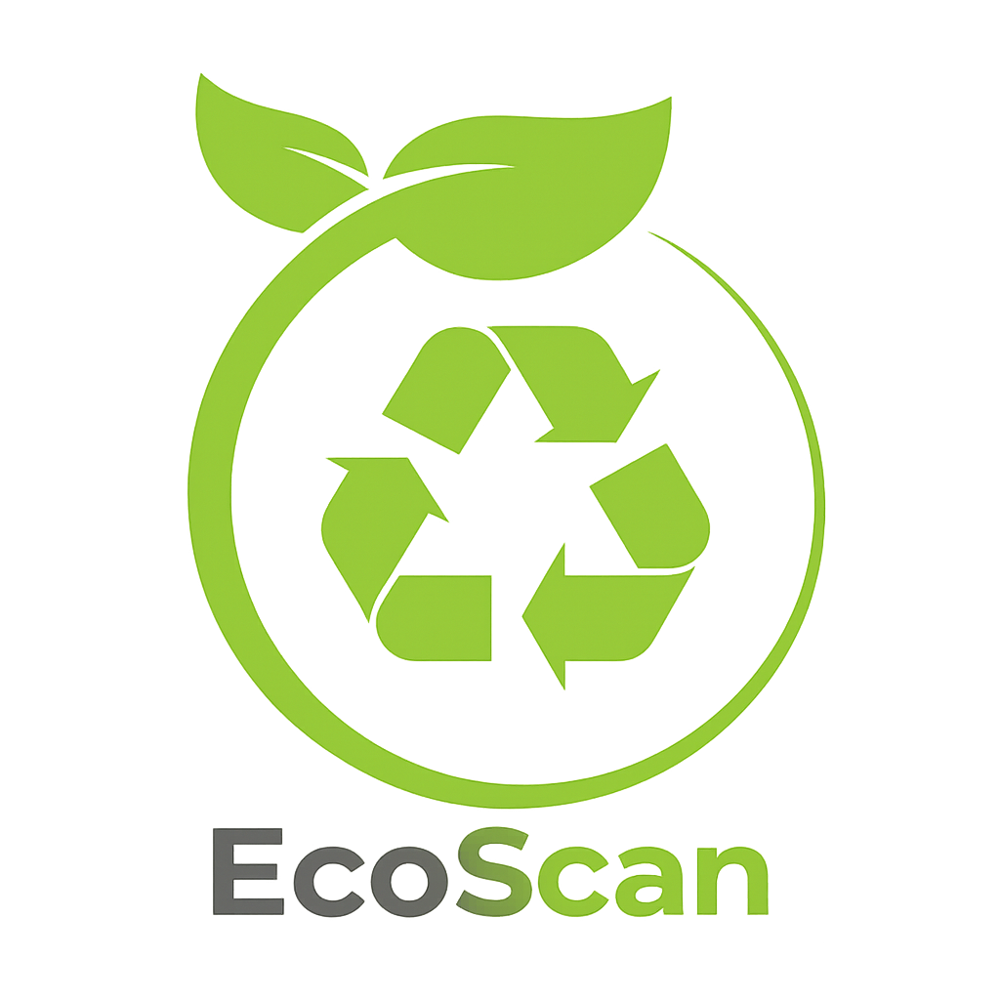

EcoScan — Clasificacion de Residuos
Sistema de inteligencia artificial que clasifica imagenes de residuos en 9 categorias usando un ensemble de 4 CNNs. El usuario sube una foto y recibe la categoria del residuo junto al porcentaje de confianza.
🎯 Problema que resuelve
Mas del 90% de los residuos reciclables terminan en rellenos sanitarios por clasificacion incorrecta. EcoScan permite identificar correctamente que tipo de residuo se tiene y como reciclarlo.